材料 3個分
※粉量を変えると自動計算されます
生地
作り方
生地
STEP 1
仕込み水を作る
水、砂糖、はちみつ、ドライイーストを加え、よく混ぜ合わせます。仕込み水は季節に合わせて調整し、半袖で過ごすような気温なら水、長袖で過ごすような気温ならお湯を使うのがおすすめです。
水、砂糖、はちみつ、ドライイーストを加え、よく混ぜ合わせます。仕込み水は季節に合わせて調整し、半袖で過ごすような気温なら水、長袖で過ごすような気温ならお湯を使うのがおすすめです。
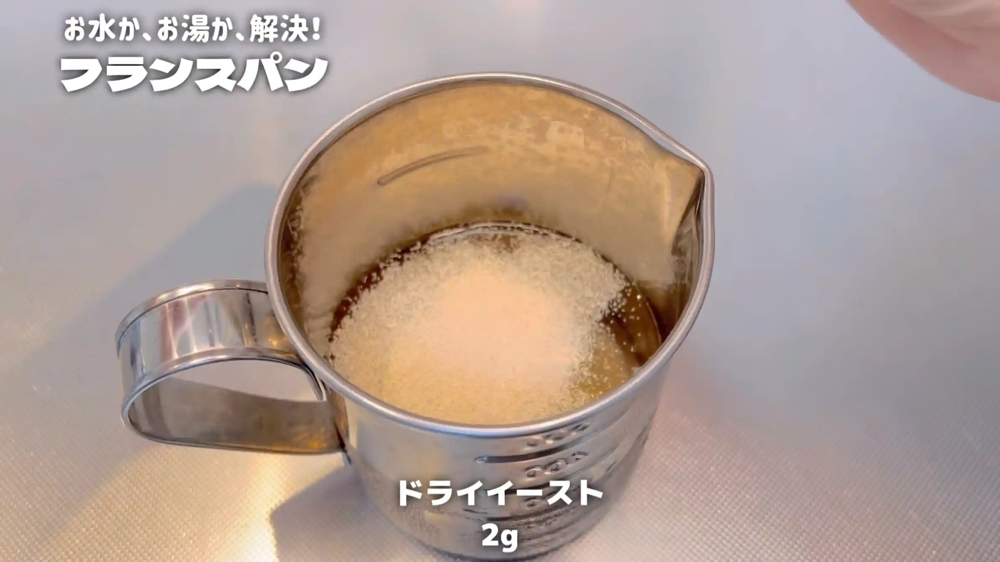
STEP 2
粉類を加えて、混ぜる
ボウルに強力粉、薄力粉、塩を入れて混ぜ、仕込み水を加えます。ヘラで混ぜ、生地がひとまとまりになり、ベタっとした状態になればOKです。ここでは捏ねる必要はありません。
ボウルに強力粉、薄力粉、塩を入れて混ぜ、仕込み水を加えます。ヘラで混ぜ、生地がひとまとまりになり、ベタっとした状態になればOKです。ここでは捏ねる必要はありません。
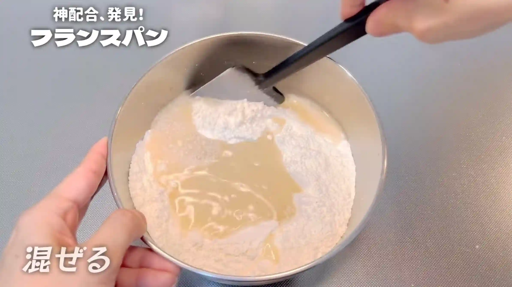
STEP 3
室温で40分おく
乾燥しないようにラップをして、生地を休ませます。
乾燥しないようにラップをして、生地を休ませます。
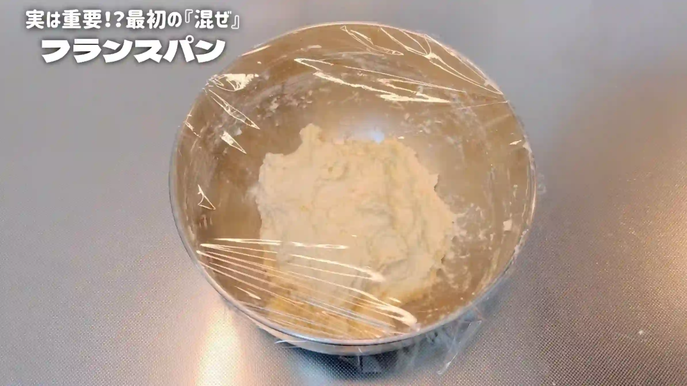
STEP 4
手を水で濡らし、生地を折りたたむ（[動画 06:41]）
手を水で濡らしておくと、ベタつく生地を扱いやすくなります。生地を四方から折りたたみ、最後にひっくり返します。捏ねる代わりに折りたたむことで、生地を少しずつ整えていきます。
手を水で濡らしておくと、ベタつく生地を扱いやすくなります。生地を四方から折りたたみ、最後にひっくり返します。捏ねる代わりに折りたたむことで、生地を少しずつ整えていきます。
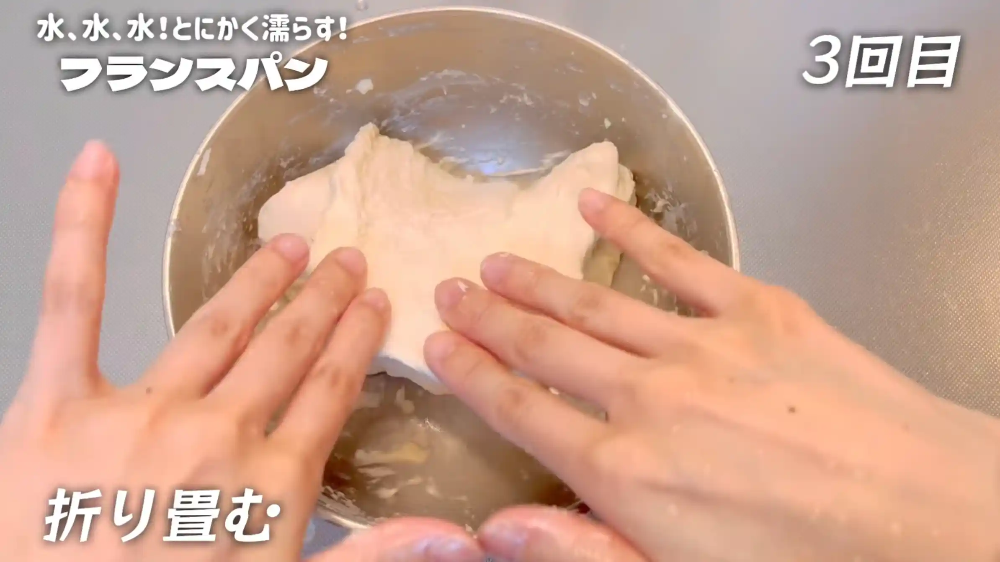
STEP 5
室温で40分おく
再びラップをして、生地を休ませます。生地がゆるんだら、次の折りたたみに進みます。
再びラップをして、生地を休ませます。生地がゆるんだら、次の折りたたみに進みます。
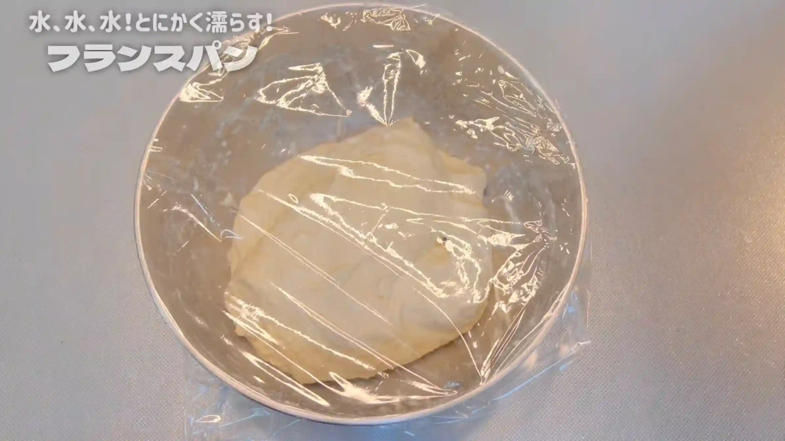
STEP 6
手を水で濡らし、生地を折りたたむ
前の工程と同じように、生地を四方から折りたたみ、最後にひっくり返します。折りたたみを繰り返すことで、捏ねなくても生地が少しずつまとまってきます。
前の工程と同じように、生地を四方から折りたたみ、最後にひっくり返します。折りたたみを繰り返すことで、捏ねなくても生地が少しずつまとまってきます。
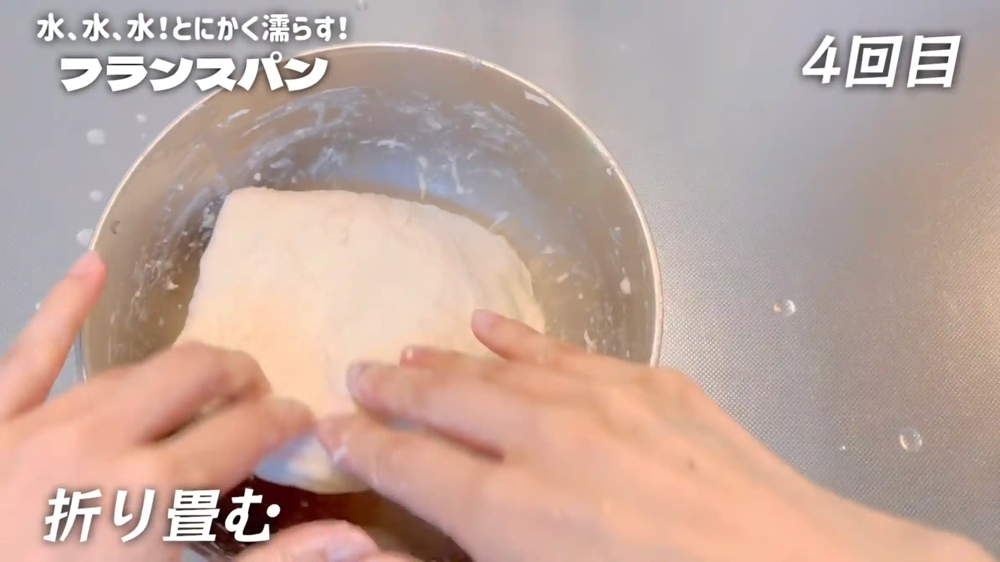
STEP 7
室温で2時間ほどおく（[動画 09:23]）
乾燥しないようにラップをして、じっくり発酵させます。2時間を目安に、生地がボウルいっぱいに膨らみ、表面に少し気泡が見えてきたら、次の工程へ進みます。
乾燥しないようにラップをして、じっくり発酵させます。2時間を目安に、生地がボウルいっぱいに膨らみ、表面に少し気泡が見えてきたら、次の工程へ進みます。
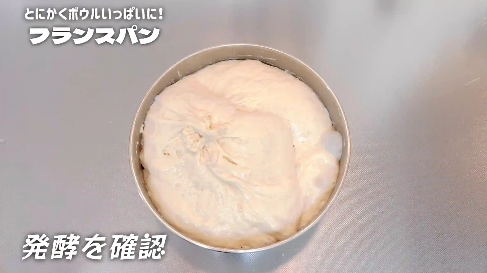
STEP 8
生地を取り出し、3分割する（[動画 09:43]）
生地がベタつくため、作業台に打ち粉をしてから取り出します。ボウルに生地がくっついている場合は、生地にも打ち粉をし、ヘラを使うと取り出しやすくなります。できるだけ生地を触りすぎないように、スケッパーで3分割します。
生地がベタつくため、作業台に打ち粉をしてから取り出します。ボウルに生地がくっついている場合は、生地にも打ち粉をし、ヘラを使うと取り出しやすくなります。できるだけ生地を触りすぎないように、スケッパーで3分割します。
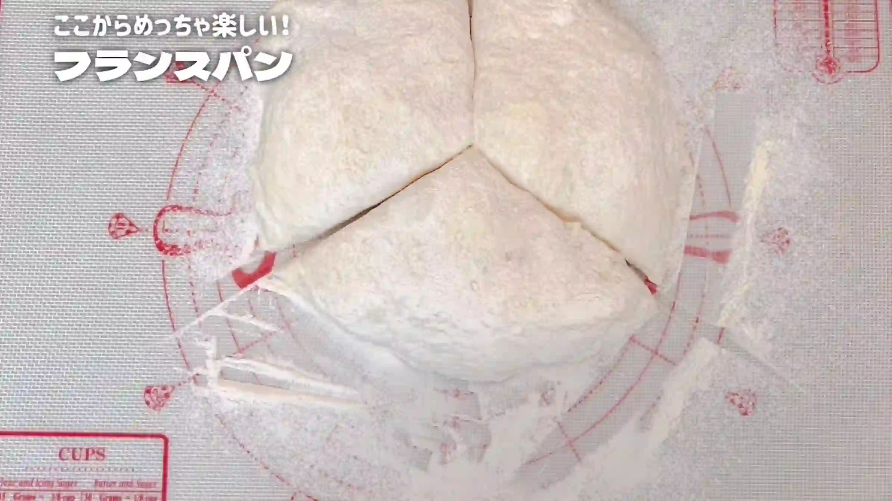
STEP 9
生地の端を中に入れるように丸める（[動画 11:42]）
生地の端を中央に入れ込むようにして、表面を軽く整えます。生地のベタつく部分を中に入れ込むイメージです。ここでは生地を強く押さえず、形を整える程度に丸めます。仮丸めをして生地を休ませることで、この後の成形がしやすくなります。
生地の端を中央に入れ込むようにして、表面を軽く整えます。生地のベタつく部分を中に入れ込むイメージです。ここでは生地を強く押さえず、形を整える程度に丸めます。仮丸めをして生地を休ませることで、この後の成形がしやすくなります。
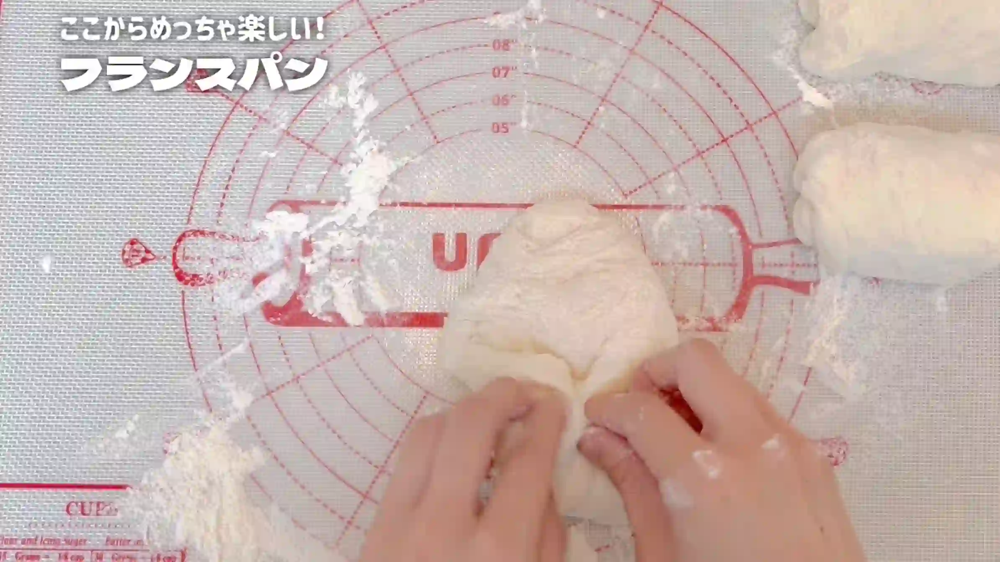
STEP 10
室温で10分おく
乾燥しないようにラップをして、生地を休ませます。生地がゆるむことで、次の成形で伸ばしやすくなります。
乾燥しないようにラップをして、生地を休ませます。生地がゆるむことで、次の成形で伸ばしやすくなります。
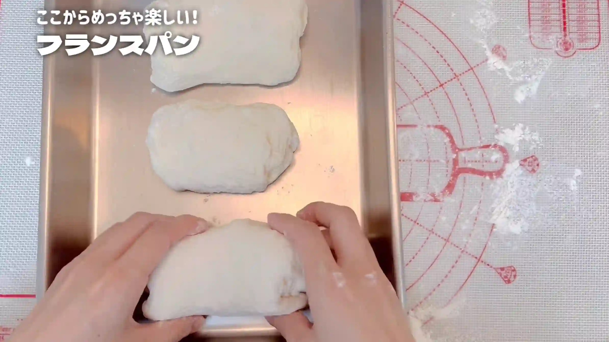
STEP 11
生地を平らにし、折りたたむ（[動画 14:10]）
生地を軽く平らにし、奥側から半分、手前側から半分を中央へ折りたたみます。生地を押しつぶしすぎないよう、やさしく扱います。
生地を軽く平らにし、奥側から半分、手前側から半分を中央へ折りたたみます。生地を押しつぶしすぎないよう、やさしく扱います。
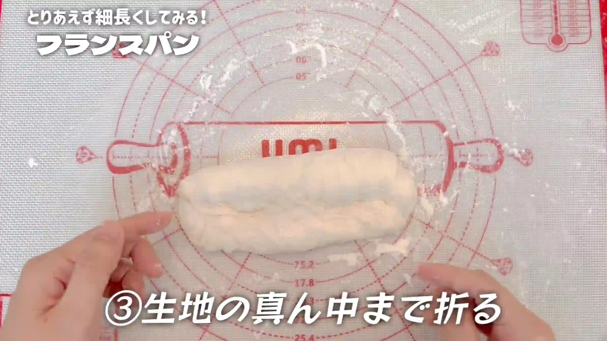
STEP 12
生地を閉じる（[動画 14:28]）
折りたたんだ生地の端と端を合わせ、しっかり閉じます。とじ目をきちんと閉じておくことで、この後に棒状へ成形しやすくなります。
折りたたんだ生地の端と端を合わせ、しっかり閉じます。とじ目をきちんと閉じておくことで、この後に棒状へ成形しやすくなります。
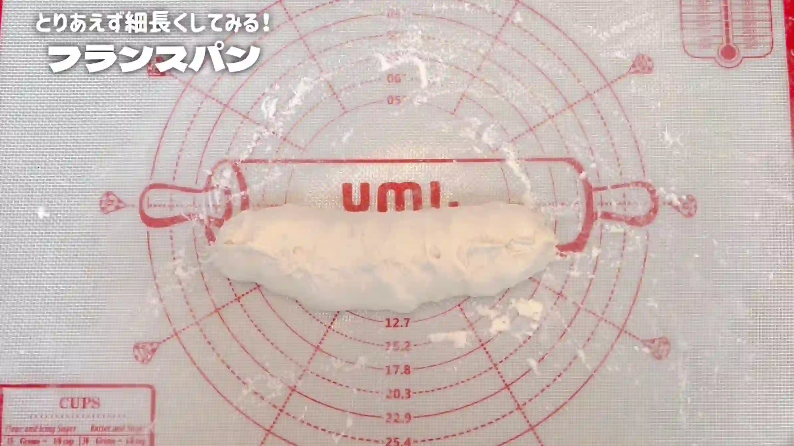
STEP 13
20㎝の棒状に成形する（[動画 14:51]）
生地を20㎝ほどの棒状に整えます。手で何度も転がしすぎると生地の表面がしわになり、膨らみにくくなるため、必要以上に触らず、やさしく形を整えます。
生地を20㎝ほどの棒状に整えます。手で何度も転がしすぎると生地の表面がしわになり、膨らみにくくなるため、必要以上に触らず、やさしく形を整えます。
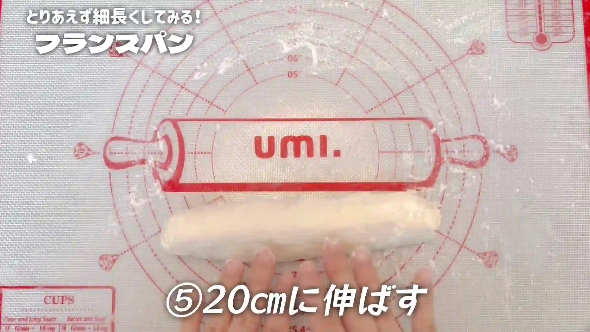
STEP 14
生地を天板に並べる
天板と長めにカットしたオーブンシートを用意します。オーブンシートを蛇腹状に折り、生地同士の間に仕切りを作って並べます。生地が横に広がるのを防ぎ、焼き上がりの形を整えやすくします。
天板と長めにカットしたオーブンシートを用意します。オーブンシートを蛇腹状に折り、生地同士の間に仕切りを作って並べます。生地が横に広がるのを防ぎ、焼き上がりの形を整えやすくします。
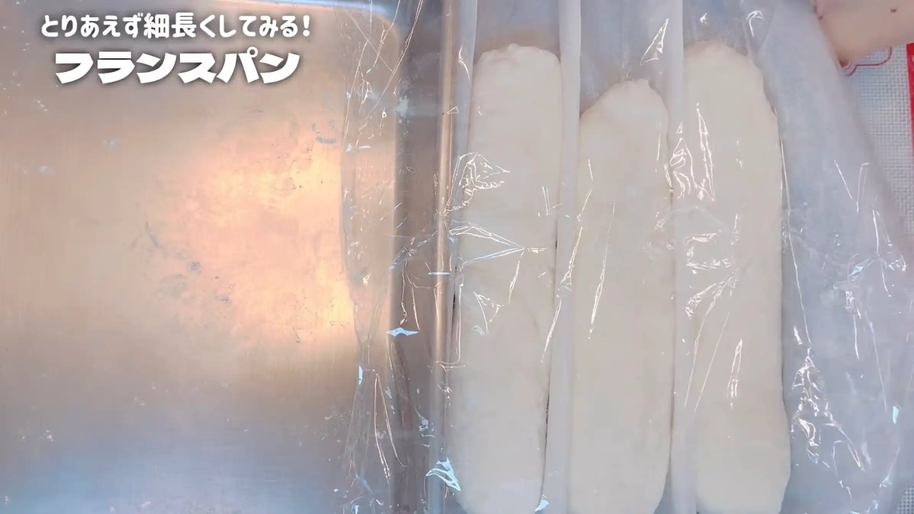
STEP 15
オーブンを250℃に予熱する
焼成前にオーブンを250℃までしっかり予熱しておきます。我が家のオーブンは最高温度が250℃で、焼成時は210℃になるため、できるだけ高温の状態から焼き始められるよう、250℃まで予熱しておきます。
焼成前にオーブンを250℃までしっかり予熱しておきます。我が家のオーブンは最高温度が250℃で、焼成時は210℃になるため、できるだけ高温の状態から焼き始められるよう、250℃まで予熱しておきます。
STEP 16
クープを入れて霧吹きをする
生地の表面にクープを入れ、霧吹きをします。スチーム機能のないオーブンなので、表面に水分を与えてから焼くことで、生地が膨らむ間に表面が乾きすぎるのを防ぎ、クープが開きやすくなるようにしています。
生地の表面にクープを入れ、霧吹きをします。スチーム機能のないオーブンなので、表面に水分を与えてから焼くことで、生地が膨らむ間に表面が乾きすぎるのを防ぎ、クープが開きやすくなるようにしています。
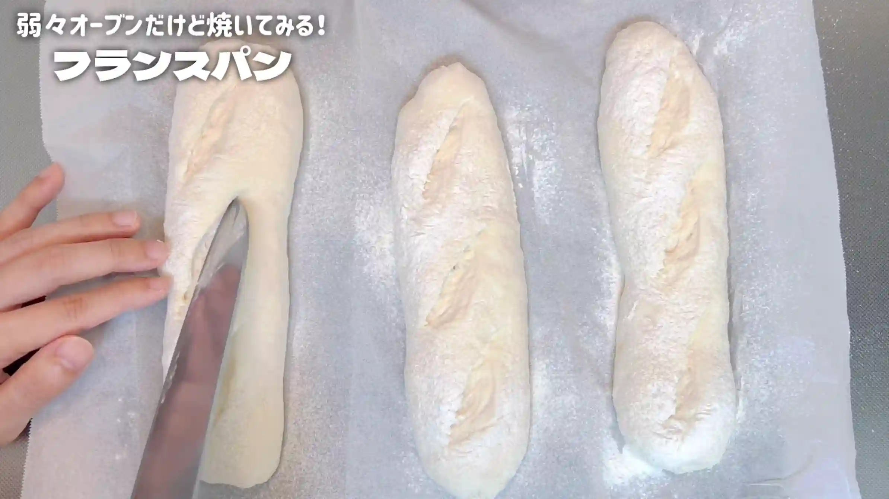
STEP 17
オーブンに入れてスイッチを入れず3分待つ
生地をオーブンに入れたらスイッチを入れず、そのまま3分待ちます。クープを開かせる工夫として試してみたところ、我が家のオーブンでは、クープが少し開きやすくなりました。
生地をオーブンに入れたらスイッチを入れず、そのまま3分待ちます。クープを開かせる工夫として試してみたところ、我が家のオーブンでは、クープが少し開きやすくなりました。
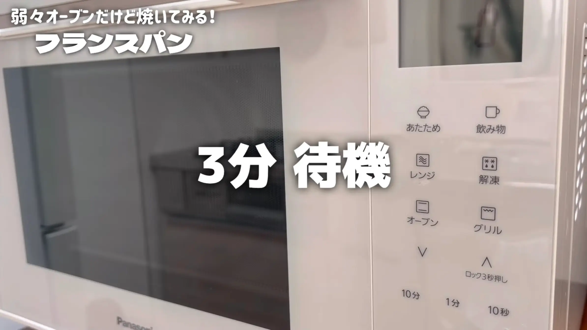
STEP 18
オーブン210℃で23分焼く
3分待った後、オーブンを210℃に設定して23分焼きます。表面が香ばしく色づくまで焼き、焼き時間は目安として、ご家庭のオーブンに合わせて調整してください。
3分待った後、オーブンを210℃に設定して23分焼きます。表面が香ばしく色づくまで焼き、焼き時間は目安として、ご家庭のオーブンに合わせて調整してください。
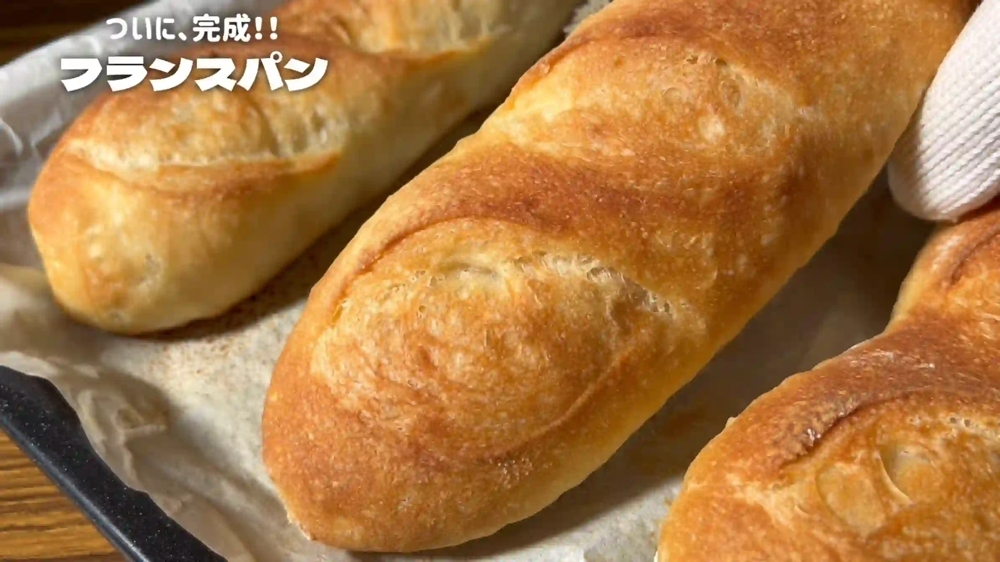
動画でチェック
おいしく作るためのワンポイントコラム
こんにちは、おなおドーナツです！
今回は、特別な道具や難しい材料を使わずに、おうちで気楽に焼き上げる『フランスパン』を作っていきます。ハードルが高く感じられる本格ハード系ですが、身近な材料でお手軽に作る3つのコツをまとめました。
① 仕込み水のコツ
季節による仕込み水の温度管理は難しく迷いがちですよね。最近は季節の中でも気温差が激しく、急に暑くなったかと思えば、急に肌寒くなったりすることもしばしば。そんな時は半袖を着る気温では「お水」を、長袖を着る気温では「お湯」を使うと、捏ねない生地でも発酵のスタートを安定させやすくなります。
② 粉の配合のコツ
準強力粉を使わなくても、スーパーで買える身近な粉のバランスで美味しく仕上がります。おすすめは強力粉11：薄力粉1の配合です。強力粉だけで作ると普通のパンのようになりがちですし、薄力粉を加えると食感は良くなるものの、発酵が弱まり旨みが少なくなりがち。そこで、薄力粉を少しだけ加える配合にすることで、程よい歯切れの良さと旨みのある生地になります。
③ 成形のコツ
発酵させた生地をボウルから取り出したら仮丸めを行い生地を緩めることで、ベタベタが抑えられ成形しやすい生地になります。また、棒状に伸ばす際はコロコロ転がしすぎないのもポイント。生地がしわしわになり、膨らみが弱くなってしまうため、優しく少しだけ転がすくらいがおすすめです。
焼き立てのフランスパンをスライスして、バターを塗って食べると、最高に幸せな気持ちになります。それでは、おうちパン作りの時間を一緒に満喫しましょう！
今回は、特別な道具や難しい材料を使わずに、おうちで気楽に焼き上げる『フランスパン』を作っていきます。ハードルが高く感じられる本格ハード系ですが、身近な材料でお手軽に作る3つのコツをまとめました。
① 仕込み水のコツ
季節による仕込み水の温度管理は難しく迷いがちですよね。最近は季節の中でも気温差が激しく、急に暑くなったかと思えば、急に肌寒くなったりすることもしばしば。そんな時は半袖を着る気温では「お水」を、長袖を着る気温では「お湯」を使うと、捏ねない生地でも発酵のスタートを安定させやすくなります。
② 粉の配合のコツ
準強力粉を使わなくても、スーパーで買える身近な粉のバランスで美味しく仕上がります。おすすめは強力粉11：薄力粉1の配合です。強力粉だけで作ると普通のパンのようになりがちですし、薄力粉を加えると食感は良くなるものの、発酵が弱まり旨みが少なくなりがち。そこで、薄力粉を少しだけ加える配合にすることで、程よい歯切れの良さと旨みのある生地になります。
③ 成形のコツ
発酵させた生地をボウルから取り出したら仮丸めを行い生地を緩めることで、ベタベタが抑えられ成形しやすい生地になります。また、棒状に伸ばす際はコロコロ転がしすぎないのもポイント。生地がしわしわになり、膨らみが弱くなってしまうため、優しく少しだけ転がすくらいがおすすめです。
焼き立てのフランスパンをスライスして、バターを塗って食べると、最高に幸せな気持ちになります。それでは、おうちパン作りの時間を一緒に満喫しましょう！


特別な道具を使わず、スーパーの材料で手軽に作る『フランスパン』のレシピです！これまでおうちフランスパン作りで失敗してきた経験をもとに、様々な工夫を詰め込みました！コラムでは「仕込み水のコツ」「粉の配合のコツ」「成形のコツ」の3つのコツをご紹介します。